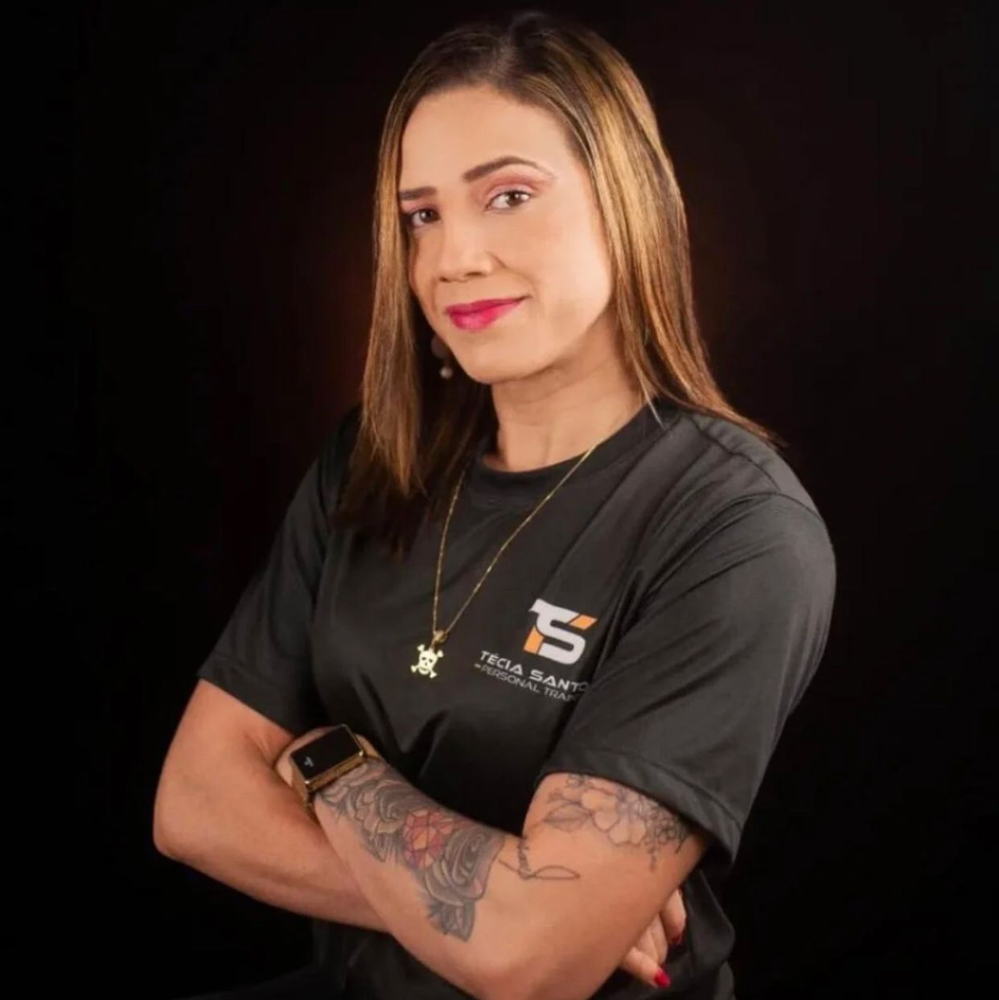
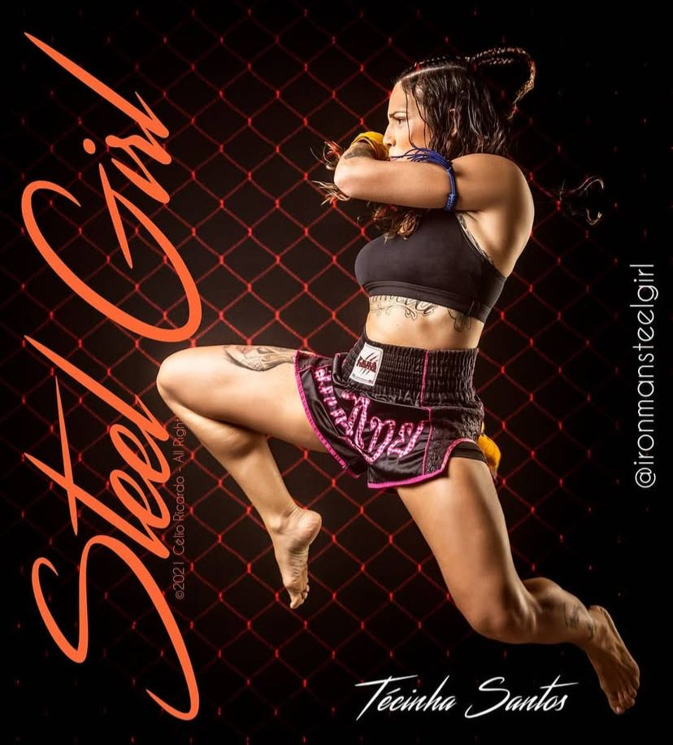
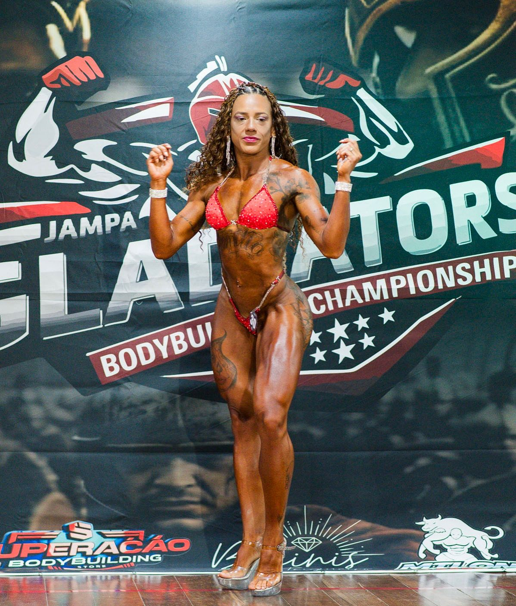

Sou mãe, atleta, apaixonada pela natureza, pela dança e pelas artes marciais. O esporte nunca foi apenas uma fase — ele sempre fez parte da minha essência.
Ainda criança, minha mãe me colocou no ballet, na Escola de Dança do Teatro Alberto Maranhão (EDTAM). Foi ali que comecei a entender disciplina, postura e dedicação.

Participei dos JERNS nas modalidades de vôlei e futsal. Já na fase adulta, me apaixonei pelas artes marciais.

Pouco antes da pandemia iniciei a faculdade de Educação Física. Foi nesse período que a musculação deixou de ser apenas treino e virou propósito.
Em 2024 participei da minha primeira competição de fisiculturismo — um marco na minha trajetória.
Acredito que o movimento transforma vidas. Não escolhi a Educação Física — ela me escolheu. Meu compromisso é ajudar pessoas a mudarem suas vidas através do treino consciente, da saúde e do bem-estar.
Se você sente que está pronta para começar sua transformação...
Conheça meu acompanhamento